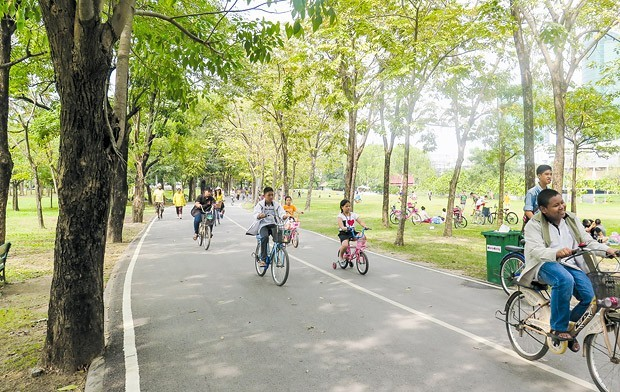
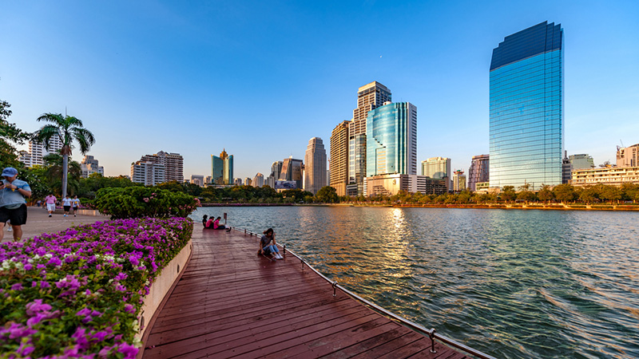
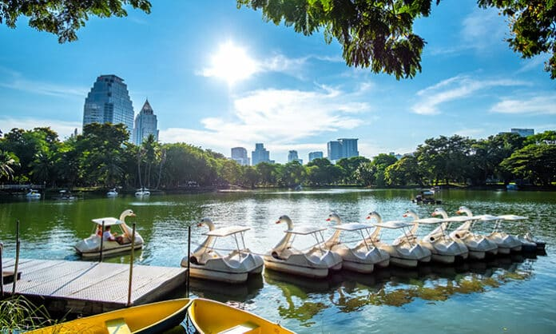

สวนรถไฟ |
สวนเบญจกิติ |
สวนลุมพินี |
|---|---|---|
|  |  |  |
สวนวชิรเบญจทัศ หรือสวนรถไฟ เดิมเคยเป็น สนามกล๊อฟ ของการรถไฟแห่งประเทศไทย (รฟท.) สร้างขึ้นตามมติของคณะรัฐมนตรีที่มี พล.อ.ชาติชาย ชุญหะวัณ เป็นนายกรัฐมนตรี ที่มีมติให้สร้างสวนสาธารณะขึ้น |
สวนเบญจกิติ เป็นสวนสาธารณะระดับย่าน เพื่อเฉลิมพระเกียรตสมเด็จพระนางเจ้่าสิริกิติ์ พระบรมราชชนนีพันปีหลวง ในโอกาส มหามงคลเฉลิมพระชนมพรรษา 5 รอบ เมื่อปี พ.ศ. 2535 |
พระบาทสมเด็จพระมงกุฎเกล้าเจ้าอยู่หัว รัชกาลที่6โปรดพระราชทานที่ดินอันเป็น ทรัพย์สินส่วนพระองค์ ณ ตําบลศาลาแดงจํานวน360ไร่ มีพระราชประสงค์ให้จัดเป็นสวนพฤกษ ชาติสาธารณะ มีเครื่องเล่นและสถานที่พักผ่อนหย่อนใจ |